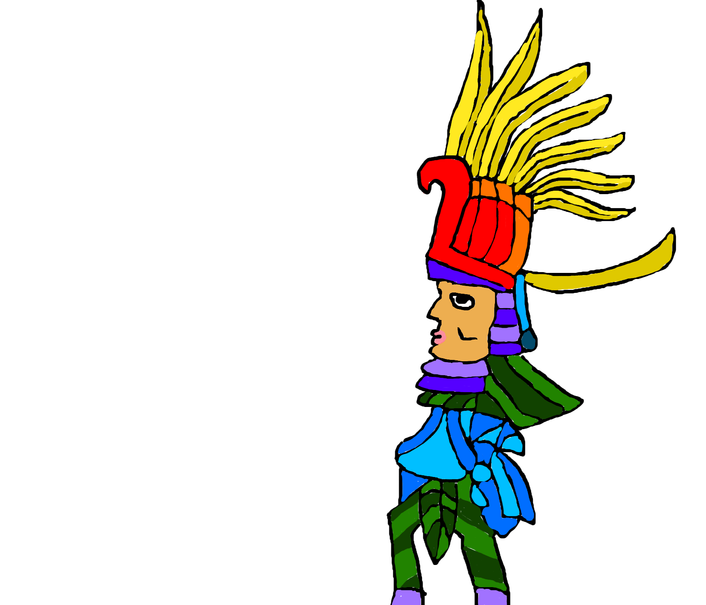

Aztec Religion
Polythiest Beliefs
The Aztec Religion has many gods, they are seperated into three different catergories sky or heaven gods, gods of agriculture and fertility, and gods of war and destruction. The aztecs beliefs were very close to those of many other religions of Mesoamerican descent. In aztec religion they prayed to no less than 200 gods or goddesses. Each god had their own unique characteristics and signifigance in the religion.

Brutality
The aztec religion was also known for its Brutality of people. Human sacrifice was a huge part of their religion in connection with many other religous festivals on the aztec calender. Another example of brutality is how the aztecs conquered rival city-states and forced them to accept aztec gods. However, the aztecs let them keep their own original gods and/or goddesses, which eventually evolved the aztec empires' religion further.